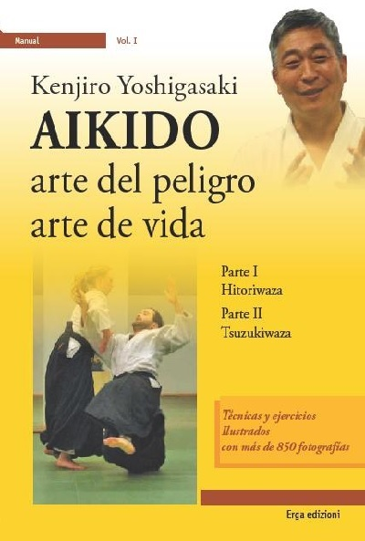

Aikido en la Vida Real
Artículos escritos por: Doshu Kenjiro Yoshigasaki
1.- Aikido en la vida real
La mayoría de las personas piensan que lo que hacemos en el Dojo es lo mismo que se hace en la Vida Real fuera del Dojo. Esta es la idea que se tiene en el deporte competitivo y la auto defensa. Aikido no es ninguna de ellas. La vida fuera del Dojo puede ser de la Vida Cotidiana o de la Vida Real. La Vida cotidiana es lo que pasa cada día, cosas tales como comer, trabajar en la oficina o dormir. La Vida Real consiste en raros eventos tales como accidentes, su casa quemándose o usted siendo atacado en la calle. El entrenamiento Ki está programado para preparalo para este tipo de cosas.
Es posible también que alguien pueda atacarlo, por eso Aikido en la Vida Real es necesario. Así, la única forma que usted puede continuar ante un ataque es cambiando la mente de ambos, la de otros y la propia mente. Debe entender esta verdad de la Vida Real. Las técnicas de Aikido en la Vida Real deben cambiar la mente de otros.
4 de Abril de 2020
Texto escrito por Doshu Kenjiro Yoshigasaki
Texto traducido por Sensei Norberto Kiman
Conferencia original en Inglés Toitsu.dk - Aikido in real life
2.- Porque la competencia no es un camino de vida
La vida es una continuidad de actos o acciones. Un acción es una expresión de uno mismo en un ambiente percibido. Todas las vidas actúan, pero las plantas y animales actúan de acuerdo al instinto con el cual nacieron. Los seres humanos no tienen mucho instinto, por lo tanto tienen que aprender cómo actuar. Esto significa que los seres humanos tienen la posibilidad de mejorar sus actos o acciones y eso es lo importante de la humanidad.
Cómo mejoran sus actos o acciones los seres humanos?. La única forma es con la imaginación y no con la experiencia. Aún las plantas y animales pueden mejorar sus actos con la experiencia, pero esa mejora siempre desciende a una forma de pelea. La pelea y la competencia pueden solo mejorar actos de pelea. Las plantas y los animales pueden pelear porque sus actos son básicamente limitados por sus instintos. Por otra parte, los seres humanos pueden destruir el mundo entero e incluso a ellos mismos con sus actos de pelea. Eso es por lo que mejorar a través de la competencia y la pelea no es un camino de vida.
Cuando uno practica Aikido, uno siempre imagina el futuro del próximo segundo y actúa. La imaginación del futuro es el único camino para mejorar su acto o acción y así crear una vida y un mundo mejor. Cuando usted compite o pelea, desarrolla un reflejo condicionado para ganar. Todos los reflejos condicionados se basan en el pasado y de ese modo no crean un futuro mejor. Eso es por lo que la competencia y la pelea no crean la habilidad de hacer su vida y al mundo mejores.
6 de Abril de 2020
Texto escrito por Doshu Kenjiro Yoshigasaki
Texto traducido por Sensei Norberto Kiman
Conferencia original en Inglés Toitsu.dk - Aikido in real life
3.- La única respuesta para todas las preguntas
Hay muchas preguntas en este mundo y los seres humanos. Aquí está la única respuesta para todas ellas. El cerebro humano imagina y por eso los seres humanos no pueden ver la realidad sino imaginar al mundo y a ellos mismos para actuar. Si la imaginación es buena, ellos actúan de un buen modo. Si la imaginación es mala, ellos hacen cosas malas. Si la imaginación es errada, ellos cometen errores. La ciencia es también un sistema basado en la imaginación y por eso no puede entender la realidad. Solo puede entender una parte de la realidad la cual puede ser medida por una máquina. Eso es por lo que la ciencia puede crear cosas muy buenas y también cosas muy malas.
Que podemos hacer respecto de nosotros mismos y el mundo? El único camino es crear más imaginaciones de tal modo que tengamos una posibilidad de tener mejores imaginaciones. En realidad los seres humanos inconscientemente supieron esto y el camino fue llamado arte. El arte es una actividad para crear imaginaciones a través de expresarlas. Al comienzo, la ciencia y las matemáticas fueron también artes hasta la era de Leonardo da Vinci. Más tarde las matemáticas y la ciencia fueron principalmente usadas solo para la tecnología y las máquinas.
Aikido como "Arte de Vida" es una actividad para llevar la vida de uno como un arte. La actividad completa de la vida de uno debe volverse un arte. Usted debe tratar de entender su propia imaginación a cada momento sabiendo lo que esta haciendo. El entrenamiento en Aikido debe ayudar a desarrollar esta habilidad.
3 de Setiembre de 2020
Texto escrito por Doshu Kenjiro Yoshigasaki
Texto traducido por Sensei Norberto Kiman
Conferencia original en Inglés Toitsu.dk - Aikido in real life
4.- Ayudar significa sacrificio
Muchos gobiernos hablan acerca de ayudar a los países pobres o a las personas en desastre. Las personas también hablan acerca de ayudarse unos a otros. Sin embargo, esa ayuda mayormente se vuelve inútil o aún dañina. Esto es porque las no entienden lo que significa ayuda.
Usted debe sacrificar una parte de su vida si quiere realmente ayudar a otros. Ayuda sin sacrificio no es ayuda.
Esta idea es común en la mayor parte del mundo excepto en los países ricos porque todos estos países se vuelven ricos sacrificando a otros.
Por eso ellos rechazan el sacrificio inconscientemente y las personas tienen lavado el cerebro de tal modo que creen que ellos pueden ayudar a otros sin sacrifico.
1 de Noviembre de 2020
Texto escrito por Doshu Kenjiro Yoshigasaki
Texto traducido por Sensei Norberto Kiman
Conferencia original en Inglés Toitsu.dk - Aikido in real life
5.- Los Samurais y el propósito de Atemi en la Vida Real
Así como los cowboys reales son completamente diferentes de los cowboys en las películas de Hollywood, los Samurais reales no fueron como los que se ve en las películas de Samurai. Los Samurais fueron básicamente soldados y ellos fueron entrenados para la guerra. En la guerra no hay combate sin solo matar al enemigo antes de que lo maten a uno. Por eso nadie tiene confianza en la guerra. Los soldados solo practican técnicas para matar de tal modo que ellos puedan matar a su enemigo tan rápido como sea posible, antes de que ellos los maten. Los Samurais solo entrenaron sus técnicas para matar.
Alrededor de 1800, la economía Japonesa se desarrolló mucho y Japón fue más rico que Europa. En ese momento Londres tenía 800 mil, París tenía 500 mil y Tokio tenía un millón. Así las personas disfrutaban de una vida rica y pacífica. Los Samurais no tenían ninguna guerra y la educación de los Samurais se volvió más importante que su habilidad para la guerra. Por eso se promovió el entrenamiento con espada para volverlos fuertes y ese tipo de entrenamiento es el que a menudo se describe en las películas de Samurai. De ese modo, el entrenamiento Samurai se volvió similar a los deportes de la aristocracia Inglesa pero no era la tradición Samurai. De todos modos en la guerra, lo único que uno puede hacer es matar al enemigo tan rápidamente como sea posible y por eso no hay combate.
Aikido de la calle no es un buen término para usar porque este significa pelear o defenderse. Eso es por lo que yo inventé el término Aikido en la Vida Real que es una forma de no pelea en el mundo real. Si uno piensa que tiene que pelear en la vida real, eso tiene que ser cambiado. La única solución en la Vida Real es cambiar la mente. Por eso Aikdo en la Vida Real es una forma física de cambiar la mente.
En el mundo real el oponente es agresivo y por eso usted debe cambiar su mente y si usted por ejemplo tiene que usar un Atemi, debería hacerlo con el mínimo daño posible. En el dojo su Uke no es agresivo y por eso usted no debería usar Atemi sino usar Atemi con Ki para practicar la técnica. Eso significa que usted no toca a Uke físicamente sino solo mentalmente.
Abril de 2020
Texto escrito por: Doshu Kenjiro Yoshigasaki
Texto compilado y traducido por: Sensei Norberto Kiman
Conferencia original en Inglés: Toitsu.dk - Aikido Techniques
Artículos

Bibliografía

Mirá videos de la práctica